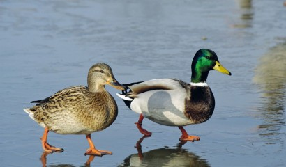

ll maschio ha colori più particolari. Il suo celebre capo verde poggia sulla sommità di un collo bianco, che termina, all’estremità opposta, con un petto color castagno che spicca sul resto del corpo, che è grigio. Le femmine sono cosparse di macchie color bruno chiaro, ma hanno le piume alari blu-violacee, che sembrano delle toppe ai lati dell'animale. Crescono fino a circa 65 centimetri in lunghezza e possono pesare fino a 1,4 kg. Spesso si vedono gruppi di germani reali tuffare il capo in acqua o immergersi completamente in essa. Tuttavia, raramente scendono sott’acqua, passano la maggior parte del loro tempo in superficie, dove si nutrono di invertebrati, pesci, anfibi, e una varietà di piante. Sulla terraferma mangiano cereali e piante.
